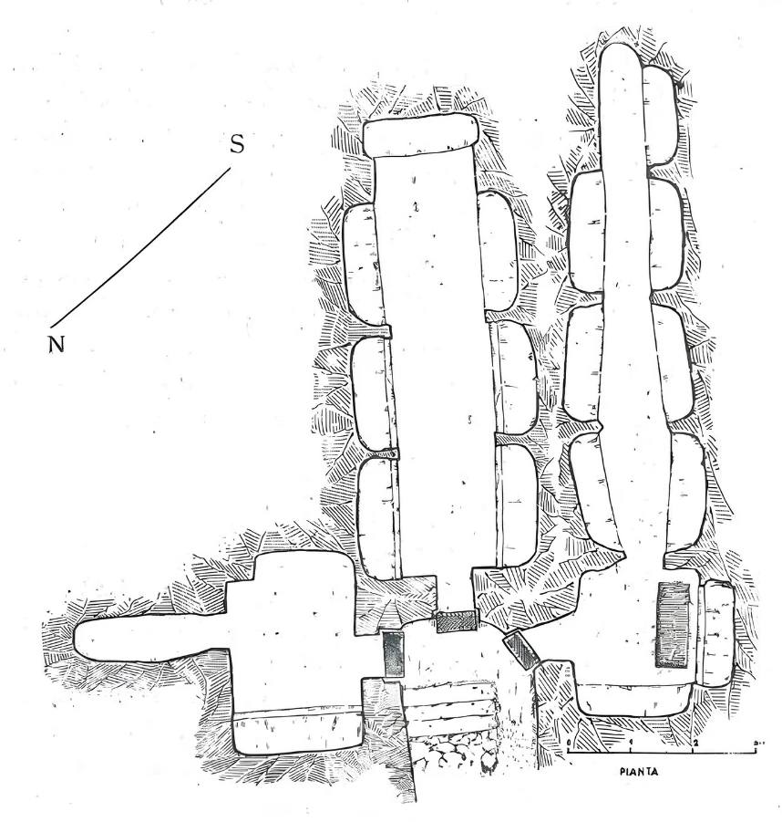
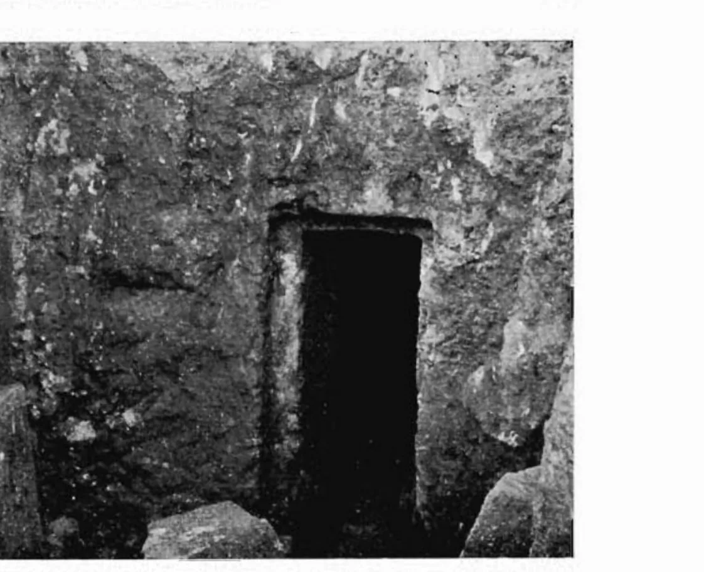
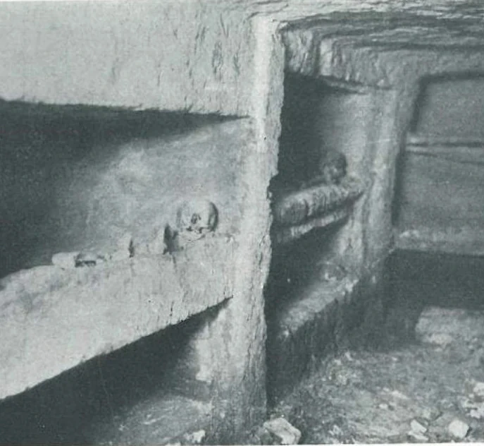
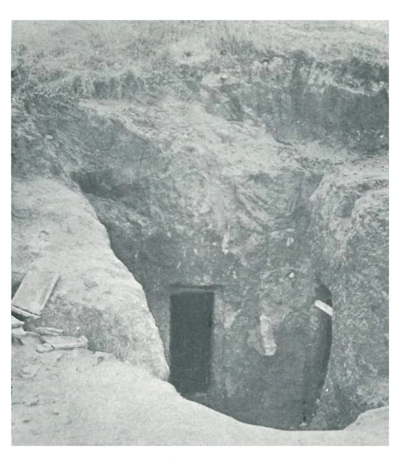
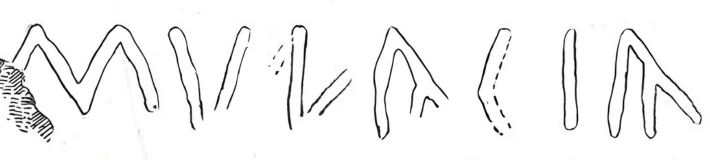
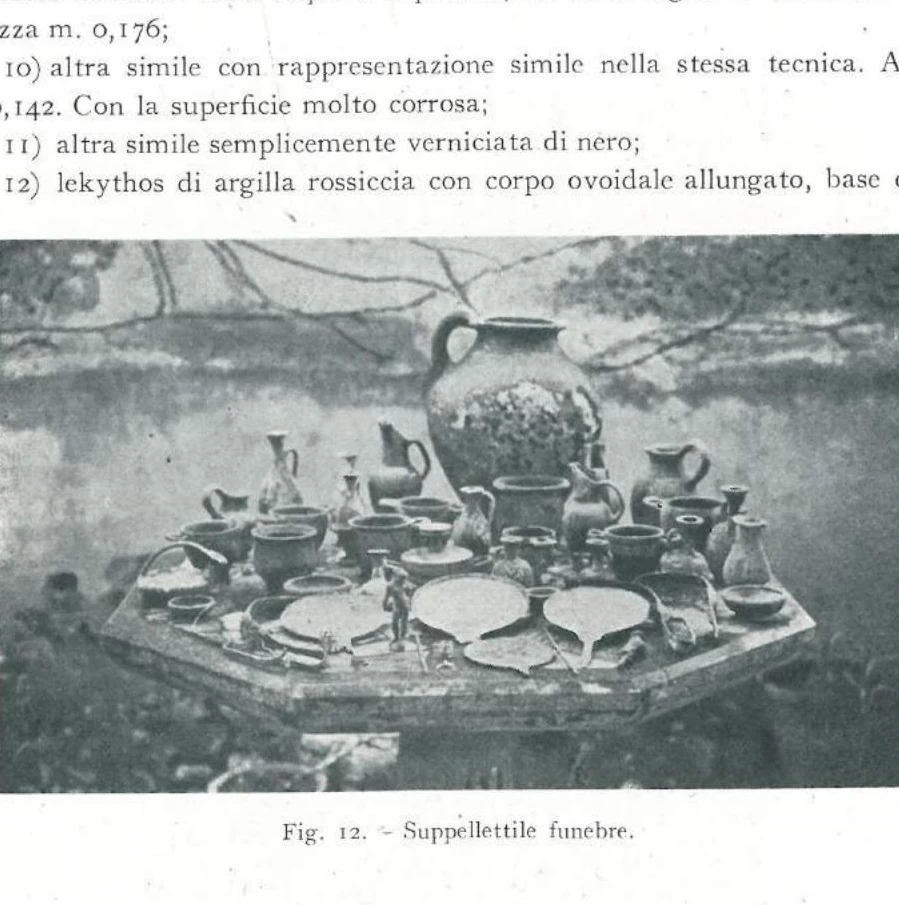
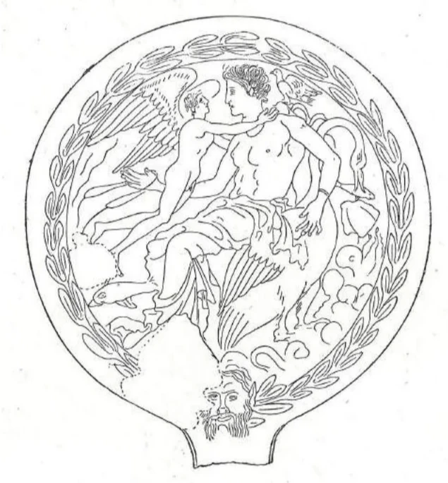

Mulakia: la tomba di famiglia e la ragazza nascosta sotto il pavimento
Un ipogeo che nel Lazio non ha uguali: la tomba di una famiglia campana, i Mulacia, con quarantatré posti per i suoi morti. E sotto il pavimento una ragazza che nessuno toccò per duemila anni.
Fuori porta, lungo la strada dei morti
Lungo la via Nettunense, poco prima del cimitero di Anzio, la strada passa accanto a più secoli di quasi ogni altro tratto della città. Poco lontano corre il fianco nord del vallo. E tra la strada e il cimitero, in un prato in pendio, si apre una delle tombe più strane del Lazio repubblicano. Perché proprio qui? I Romani seppellivano i morti lungo le strade, appena fuori porta, e questa era la necropoli meridionale di Antium, ai piedi della Porta Aurea.
La scoperta del 1938
Il 27 dicembre 1938 una squadra di operai sta cavando blocchi di arenaria sul pendio erboso della via Nettunense. Un colpo di piccone, e si apre il vestibolo di una tomba sotterranea. Dentro ci sono decine di sepolture, intatte da secoli. Prima che arrivino le autorità, le saccheggiano quasi tutte.
L'ispettore onorario della Soprintendenza, Vincenzo G. Cicconetti, riesce a salvare una parte dei materiali. Subito dopo arriva l'archeologa Lucia Morpurgo. Nei primi giorni del 1939 disegna e fotografa l'ipogeo stanza per stanza, ma la sua relazione uscirà solo nel 1944-45, e l'archivio della Soprintendenza ne conserva ancora gli originali.

Tre stanze, loculi su più piani
L'ingresso è un'apertura in pietra nel fianco di un leggero pendio, e dalla Nettunense si riconosce ancora. Dentro, tre stanze:
- Camera centrale: una galleria lunga, con i loculi scavati nelle pareti su tre livelli; sul lato sinistro qualcuno ha inciso il nome di famiglia, «Mulakia».
- Camera di destra: simile alla centrale, con le stesse file di loculi.
- Camera di sinistra: due letti funebri ai lati e, sul fondo, l'inizio di una galleria che nessuno finì mai.
Le due gallerie principali sono lunghe 6,65 e 8,30 metri, con il soffitto a 1,75: un uomo alto ci cammina a testa bassa. In tutto, la tomba aveva posto per 43 defunti.
La prima notizia a stampa: Lugli, 1940
La relazione di Morpurgo tardò anni, ma la scoperta non restò segreta. Nel 1940 Giuseppe Lugli ne diede la prima notizia a stampa, con due fotografie, e i suoi conti fotografano l'ipogeo appena saccheggiato. Nel vano centrale, sei loculi per parte su due file, tre in fondo e altri due a livello del pavimento. In quello di destra, «a forma di galleria catacombale», ventitré. In quello di sinistra pochi, perché lo scavo «fu sospeso poco dopo l'inizio». Le tre porte si aprivano in fondo a un dromos, un corridoio a cielo aperto, «come nelle tombe etrusche».
I morti erano più di cinquanta. Sepolti interi, senza cassa, «solo avvolti in bende», con accanto le loro cose: vasi etrusco-campani, strigili, fusarole per filare, collane e specchi, «di cui uno elegantemente inciso con la figura di Leda», lo specchio col cigno che oggi è al Museo. Lugli datò la tomba tra la fine del IV e l'inizio del III secolo a.C., dopo la conquista romana. E lasciò aperta una domanda che è ancora lì: chi erano questi morti, Volsci o Romani?




Il nome: Mulakia o Munacia?
Chi erano i Mulacia? Il nome, «Mulakia» o «Mulacia», è un gentilizio, cioè un nome di famiglia, al femminile, e viene dalla Campania. La terminazione fa pensare a immigrati arrivati dalla Campania o dal Sannio, che si stabilirono ad Anzio prima dei Romani o nei primi tempi della colonia, dopo il 338 a.C. Perché scelsero proprio Anzio, non lo sappiamo.
La riscoperta del 2007: la Tomba della Civetta
Nel 2007 l'associazione culturale «Olim» e la cooperativa Matrix 96 tornano nella tomba, d'accordo con la Soprintendenza e con l'Istituto di Topografia Antica della Sapienza. Il progetto lo paga la Regione Lazio e lo coordinano Andrea Di Renzoni e Andrea Schiappelli. All'inizio è un lavoro di pulizia.
Poi, nel pavimento della camera di sinistra, la sorpresa che nessuno si aspettava: una sepoltura rimasta intatta per oltre duemila anni. È una giovane donna della famiglia Mulacia. Tra le sue ossa ci sono quelle di un bambino mai nato: con ogni probabilità morì di parto.

Uno specchio e una civetta
Accanto a lei, due oggetti fuori dal comune:
- Uno specchio di bronzo inciso, della metà del IV secolo a.C., con i Dioscuri, Castore e Polluce: un pezzo di bottega raffinata, che lega la famiglia al mondo greco del Sud Italia.
- Una pelìke, una piccola anfora a due anse, nera, con una civetta dipinta in rosso tra rami d'ulivo. Da lei la tomba ha preso il nome: Tomba della Civetta.
Il 17 agosto 2007 la scoperta fu presentata al Museo Civico Archeologico, e la tomba si aprì ai visitatori. Per una sera, una soltanto.
